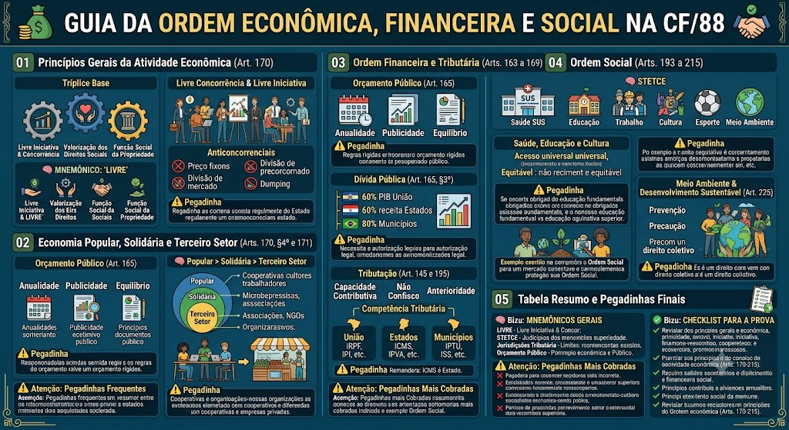

Art. 170 — Tríplice Base
Art. 170 — Tríplice Base
Art. 170, caput: 'A ordem econômica tem por finalidade assegurar a todos o seu direito de vida com dignidade, assegurando-lhes, com base nos seguintes princípios, a liberdade de iniciativa e de concorrência e a prevalência dos direitos sociais, quais sejam: I - livre iniciativa e concorrência; II - livre iniciativa e concorrência; III - livre iniciativa e concorrência.'
Tríplice base do Art. 170:
1. Livre iniciativa e concorrência — o mercado deve ser livre, sem barreiras estatais injustificadas.
2. Prevalência dos direitos sociais — a economia deve subordinar-se aos direitos fundamentais (saúde, educação, moradia, etc.).
3. Função social da propriedade — a propriedade deve cumprir sua função social (Art. 182, caput).
🧠 MNEMÔNICO: 'LIVRE' — Livre iniciativa, Igualdade, Valorização dos direitos sociais, Respeito à função social, Economia popular.
Livre Concorrência e Livre Iniciativa
Livre Concorrência e Livre Iniciativa
Livre iniciativa: todo cidadão pode exercer atividade econômica, salvo restrições legais (ex.: profissões regulamentadas).
Livre concorrência: o mercado deve ser competitivo, sem monopólios ou práticas anticoncorrenciais.
Proibição de práticas anticoncorrenciais (Art. 171): é vedado ao empresário ou empresa:
- Fixar preços em desacordo com o mercado;
- Dividir o mercado com concorrentes;
- Praticar discriminação preços;
- Abandonar o mercado para prejudicar concorrentes.
⚠️ Pegadinha: A banca afirma que livre concorrência significa que o Estado não pode interferir no mercado. ERRADO. O Estado pode (e deve) regular para garantir a concorrência justa (ex.: Lei de Defesa da Concorrência).
Função Social da Propriedade — Art. 182
Função Social da Propriedade — Art. 182
Art. 182, caput: 'A propriedade deve atender à sua função social, assegurada a todos o direito de acesso às fontes de renda e à de propriedade de pequena e média escala, garantindo-se, com fundamento na lei, a prioridade à habitação popular, à segurança e ao progresso da vida familiar e coletiva.'
Função social da propriedade:
- A propriedade deve servir à sociedade, não apenas ao proprietário.
- O Estado pode expropriar (desapropriação) por utilidade pública, com indenização.
- A propriedade rural deve cumprir a legislação agrária (Art. 184).
⚠️ Pegadinha: A banca afirma que a função social da propriedade significa que o Estado pode tirar a propriedade sem indenização. ERRADO. A desapropriação exige indenação prévia, justa e em dinheiro (Art. 5º, XXIV).
⚠️ Pegadinhas Frequentes
⚠️ Pegadinhas Frequentes
❌ 'Livre concorrência significa que o Estado não pode regular o mercado.' → ERRADO (o Estado regula para garantir concorrência justa).
❌ 'Função social da propriedade permite expropriação sem indenização.' → ERRADO (exige indenização prévia, justa e em dinheiro).
❌ 'A economia popular é a mesma que economia solidária.' → ERRADO (economia popular é mais ampla; economia solidária é um subset).
Classificação da Economia
Classificação da Economia
Economia Popular:
- Inclui a economia solidária, a economia familiar e a economia de pequena escala.
- Caracteriza-se pela produção de bens e serviços por trabalhadores autônomos, cooperativas e microempresas.
Economia Solidária:
- Subconjunto da economia popular.
- Baseada na cooperação, solidariedade e democracia.
- Exemplos: cooperativas de trabalho, redes de economia solidária.
Terceiro Setor:
- Organizações da sociedade civil sem fins lucrativos.
- Exemplos: ONGs, fundações, associações de caridade.
🧠 MNEMÔNICO: 'Popular > Solidária > Terceiro Setor' — a popular é a mais ampla, a solidária é um subset, e o terceiro setor é não lucrativo.
Cooperativas e Economia de Trabalho Associado
Cooperativas e Economia de Trabalho Associado
Cooperativas:
- Forma de organização econômica baseada na cooperação mútuo.
- Caracterizada pela democracia (um membro = um voto), autogestão e distribuição equitativa dos resultados.
Economia de Trabalho Associado (EITA):
- Forma de organização onde os trabalhadores são sócios da empresa.
- Cada trabalhador possui quotas de participação.
⚠️ Pegadinha: A banca afirma que cooperativas são a mesma que empresas. ERRADO. Cooperativas têm natureza jurídica distinta (Lei 13.303/2016) e princípios democráticos.
Para Leigos – Economia Popular
Para Leigos – Economia Popular
Pense na economia popular como um mercado de rua:
- Cooperativa de trabalho: um grupo de artesãos se junta para vender juntos, dividindo os lucros.
- Economia de trabalho associado: um grupo de profissionais forma uma empresa onde todos são sócios.
- Terceiro setor: uma ONG que oferece cursos gratuitos.
Todos esses modelos buscam alternativas ao capitalismo tradicional, priorizando a solidariedade e a democracia.
Orçamento Público — Art. 165
Orçamento Público — Art. 165
Art. 165: 'A lei orçamentária é essencial à ordem constitucional e sua execução se baseia na programação e na avaliação das atividades e na aplicação dos recursos orçamentários em planos e programas.
Princípios do orçamento público:
- Anualidade: o orçamento é anual (não é perpétuo).
- Especificidade: cada recurso deve ser usado para o fim específico.
- Publicidade: o orçamento deve ser público.
- Equilíbrio: receitas = despesas.
- Continuidade: as despesas de capital são contínuas.
⚠️ Pegadinha: A banca afirma que o orçamento pode ser alterado a qualquer momento. ERRADO. Existem regras rígidas (Lei de Responsabilidade Fiscal, Lei Orçamentária Anual).
Dívida Pública — Art. 165, §3º
Dívida Pública — Art. 165, §3º
Art. 165, §3º: 'A dívida externa e a dívida interna da União, dos Estados, do Distrito Federal e dos Municípios serão autorizadas e contratadas por lei, observada a legalidade, a moralidade, a publicidade e a eficiência.'
Limites de dívida (Lei de Responsabilidade Fiscal — LRF):
- União: 60% do PIB (limite geral).
- Estados e DF: 60% da receita corrente líquida.
- Municípios: 80% da receita corrente líquida.
⚠️ Pegadinha: A banca afirma que a dívida pública pode ser contratada sem autorização legal. ERRADO. Exige autorização por lei (Art. 165, §3º).
Tributação — Art. 145 e 195
Tributação — Art. 145 e 195
Princípios da tributação:
- Capacidade contributiva: o tributo deve ser proporcional à capacidade de pagar.
- Não confisco: o tributo não pode ser tão alto a ponto de confiscar a riqueza.
- Não retroatividade: o tributo não pode ser retroativo.
- Anterioridade: o tributo só pode ser criado por lei anterior à sua cobrança.
- Isonomia: todos devem pagar o mesmo tributo nas mesmas condições.
Competência tributária:
- União: IRPF, IRPJ, ITR, IPI, IOF, IPCA, etc.
- Estados: ICMS, IPVA, ITCMD, etc.
- Municípios: ISS, IPTU, taxas, etc.
⚠️ Pegadinha: A banca afirma que o ICMS é da União. ERRADO. ICMS é do Estado.
⚠️ Pegadinhas Mais Cobradas
⚠️ Pegadinhas Mais Cobradas
❌ 'ICMS é tributo federal.' → ERRADO (é estadual).
❌ 'IPTU é do Estado.' → ERRADO (é municipal).
❌ 'Dívida pública pode ser contratada sem lei.' → ERRADO (exige autorização legal).
❌ 'Imposto pode ser retroativo.' → ERRADO (princípio da anterioridade).
Direitos Sociais Fundamentais
Direitos Sociais Fundamentais
A Ordem Social (Título IV, Capítulos I a VI) garante direitos sociais essenciais:
- Art. 193: Direito à saúde (SUS).
- Art. 205: Direito à educação.
- Art. 207: Direito ao trabalho.
- Art. 209: Direito ao esporte.
- Art. 211: Direito à cultura.
- Art. 213: Direito à comunicação social.
- Art. 215: Direito ao meio ambiente equilibrado.
🧠 MNEMÔNICO: 'STETCE' — Saúde, Trabalho, Educação, Transporte, Cultura, Esporte.
Saúde, Educação e Cultura
Saúde, Educação e Cultura
Direito à Saúde (Art. 193 e 196):
- SUS (Sistema Único de Saúde) é universal, equitativo e integral.
- O Estado deve garantir a todos acesso a serviços de saúde.
Direito à Educação (Art. 205 e 206):
- Ensino fundamental obrigatório e gratuito.
- Ensino médio e superior devem ser oferecidos.
Direito à Cultura (Art. 211):
- Estado deve promover a democratização da comunicação e o acesso à cultura.
⚠️ Pegadinha: A banca afirma que o ensino superior é obrigatório. ERRADO. É o ensino fundamental que é obrigatório (Art. 205, §2º, c).
Meio Ambiente e Desenvolvimento Sustentável — Art. 225
Meio Ambiente e Desenvolvimento Sustentável — Art. 225
Art. 225, caput: 'Todos têm direito ao meio ambiente equilibrado, para presente geração e futuras, devendo o Estado assegurar a todos os meios de preservação e de recuperação do equilíbrio ambiental, penalidade para os que provocarem poluição.
Princípios:
- Prevenção: evitar danos antes que ocorram.
- Precaução: agir mesmo com incerteza científica.
- Responsabilidade compartilhada: todos (Estado, empresas, cidadãos) são responsáveis.
- Poluição passiva: o poluente responde mesmo sem intenção.
⚠️ Pegadinha: A banca afirma que o direito ao meio ambiente é um direito individual. ERRADO. É um direito coletivo (Art. 225, §1º).
Para Leigos – Ordem Social
Para Leigos – Ordem Social
Pense na Ordem Social como a 'lista de direitos que o Estado deve garantir':
- Saúde: você tem direito a um hospital público (SUS).
- Educação: você tem direito a uma escola pública.
- Trabalho: você tem direito a salário mínimo e férias.
- Cultura: você tem direito a bibliotecas e eventos culturais.
- Meio ambiente: você tem direito a ar limpo e água potável.
Esses direitos são positivos — o Estado precisa fazer algo para garanti-los, não apenas não interferir.
🧠 MNEMÔNICOS GERAIS
🧠 MNEMÔNICOS GERAIS
- 'LIVRE' — Livre iniciativa, Igualdade, Valorização dos direitos sociais, Respeito à função social, Economia popular.
- 'STETCE' — Saúde, Trabalho, Educação, Transporte, Cultura, Esporte.
- 'ICMS = Estado / IPTU = Município / IRPF = União' — competência tributária.
- '60% PIB = dívida da União' — limite de dívida.
- 'Anualidade, Especificidade, Publicidade, Equilíbrio' — princípios orçamentários.
⚠️ Pegadinhas Mais Cobradas
❌ 'ICMS é tributo federal.' → ERRADO (é estadual).
❌ 'IPTU é do Estado.' → ERRADO (é municipal).
❌ 'Ensino superior é obrigatório.' → ERRADO (é o fundamental).
❌ 'Direito ao meio ambiente é individual.' → ERRADO (é coletivo).
❌ 'Livre concorrência = Estado não regula.' → ERRADO (regula para garantir concorrência).
❌ 'Função social permite expropriação sem indenização.' → ERRADO (exige indenização).
✅ CHECKLIST PARA A PROVA
✅ CHECKLIST PARA A PROVA
✅ Art. 170: livre iniciativa, concorrência, direitos sociais, função social, economia popular.
✅ Economia popular > solidária > terceiro setor.
✅ Orçamento: anualidade, especificidade, publicidade, equilíbrio.
✅ Dívida: exige lei, limites (60% PIB União, 60% receita Estados, 80% Municípios).
✅ Tributação: capacidade contributiva, não confisco, anterioridade, isonomia.
✅ Tributos: IRPF/IRPJ/IPI/IOF (União), ICMS (Estados), ISS/IPTU (Municípios).
✅ Ordem Social: saúde, educação, trabalho, cultura, esporte, meio ambiente.
✅ Meio ambiente: coletivo, princípios de prevenção e precaução.
Mapa-mental
Material de estudo: Ordem Econômica e Financeira
Material complementar · Ver fonte no GitHub
Tabela Resumo e Pegadinhas Finais
Mapa-mental
